Цель
Сделать приложение, которое объединяет генерацию текста, изображений, видео и аудио в одном месте. Чтобы человек не прыгал между разными сервисами, а решал свои задачи быстро и просто.

AI-помощник для создания креативного контента
AI — одна из самых обсуждаемых тем 2025 года, и я просто не мог обойти ее стороной. Давайте разберемся кто, что, кому и для чего.
Сделать приложение, которое объединяет генерацию текста, изображений, видео и аудио в одном месте. Чтобы человек не прыгал между разными сервисами, а решал свои задачи быстро и просто.
Целевая аудитория — это, в первую очередь, контент мейкеры: дизайнеры, smm, маркетологи, блогеры и прочие люди, жизнь и работа которых связана с творчеством. А также любой человек, которому хоть иногда надо что-то сгенерировать.
Решены все проблемы-гипотезы, сформулированные в ходе дискавери.
Все сам — от идеи и исследований до финальных экранов, интерфейсов и тарифов.
Тут я погуглил, забенчмаркал конкурентов и поспрашивал друзей.
Несмотря на то, что это не тот формат сервиса, который я хочу задизайнить, это одна из самых популярных AI-моделей во всем мире, поэтому стоит внимания.
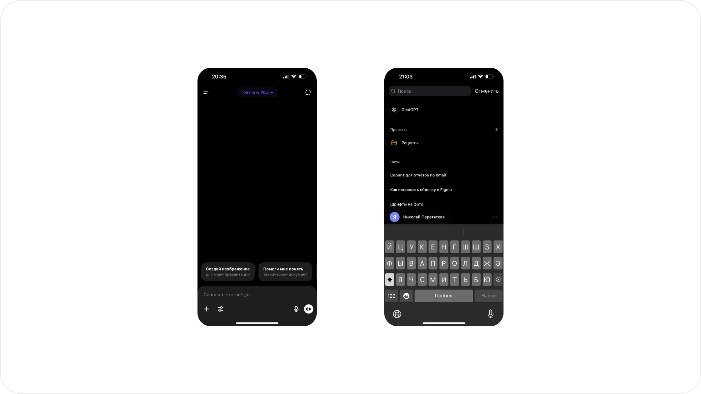
В новом чате есть несколько предложений промтов, это помогает начать работу неопытным пользователям. В меню есть список чатов и папок, но нет какого-либо разделения.
Сервис для генерации текста, фото, видео и аудио. Есть телеграм-бот и веб-версия.
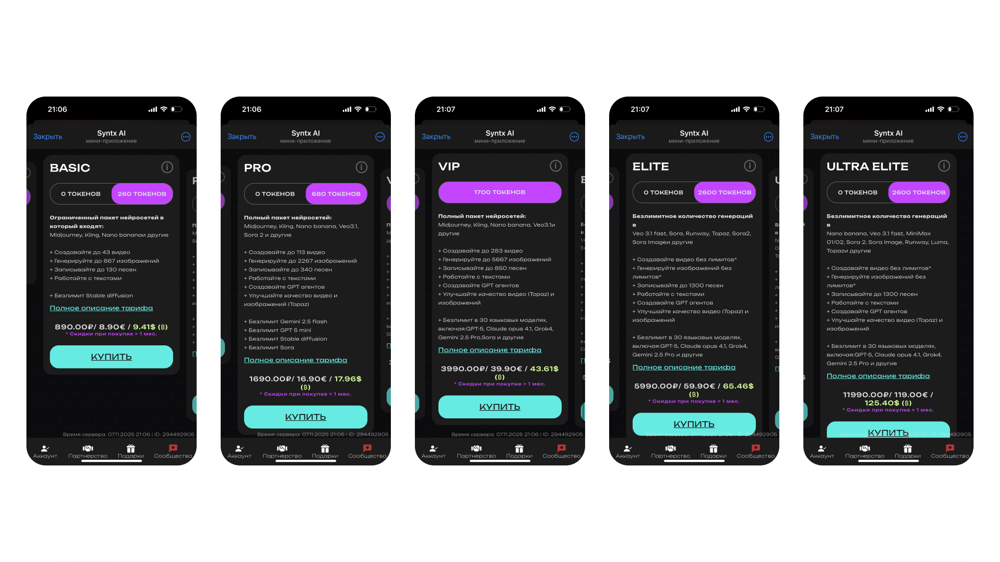
К покупке предлагают 5 тарифов. С учетом вариаций с токенами и без и периодами действия получается 36 вариантов. Без экономического образования тут явно не разобраться.
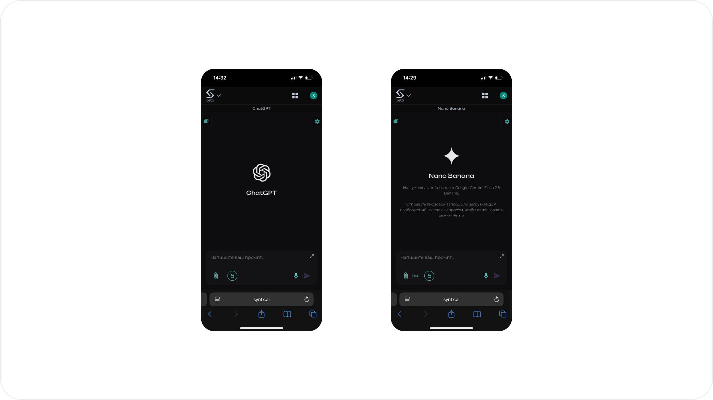
У всех нейросетей единый интерфейс — это удобно. В новом чате нет подсказки с вариантами промтов (хотя в приложении чата гпт они были). У неопытных пользователей это может вызвать дискомфорт и страх чистого листа.
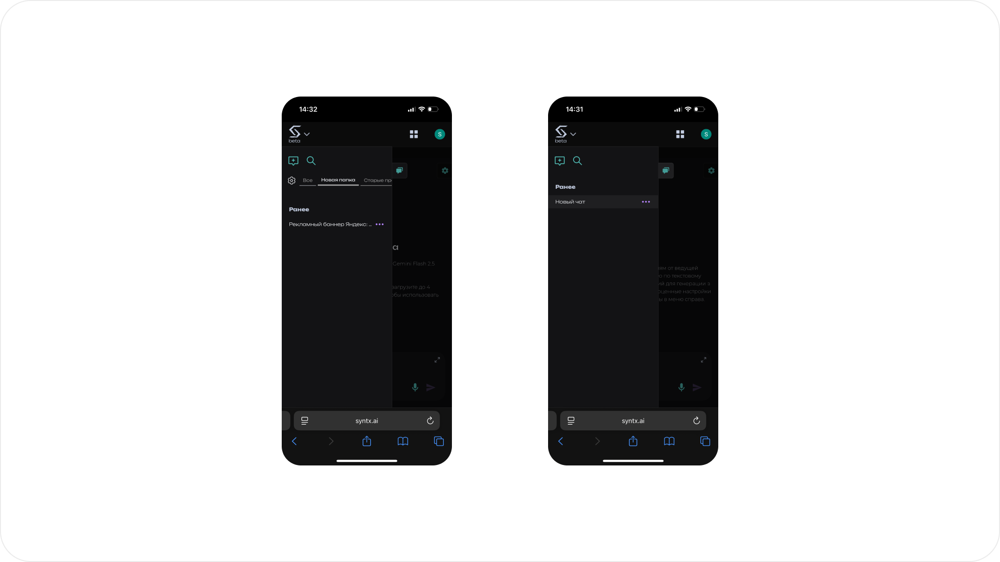
К истории запросов тут есть вопросы. Папки выстраиваются в одну короткую строку, куда вмещается всего 2,5 названия. И у каждой нейросети своя история. Всего в приложении 40+ нейросетей, соответственно 40+ историй. Если у тебя много проектов и ты давно работаешь, то что-то найти будет практически невозможно.
AI-студия для создания фото и видео. Есть приложение.
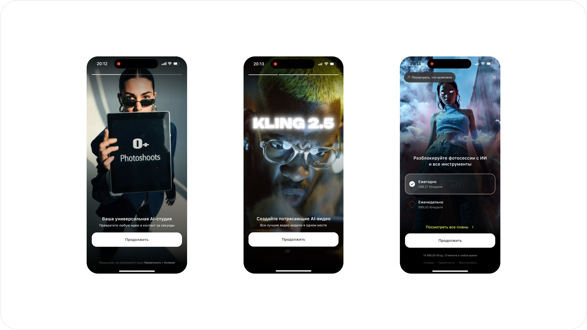
После невнятного онбординга предлагают оформить подписку. За что? Не понятно. Да, в верхнем правом углу есть еле заметный крестик, который позволяет пропустить оплату на этом этапе, но это не очевидно и требуется время, чтобы понять, что сейчас с деньгами можно не расставаться.
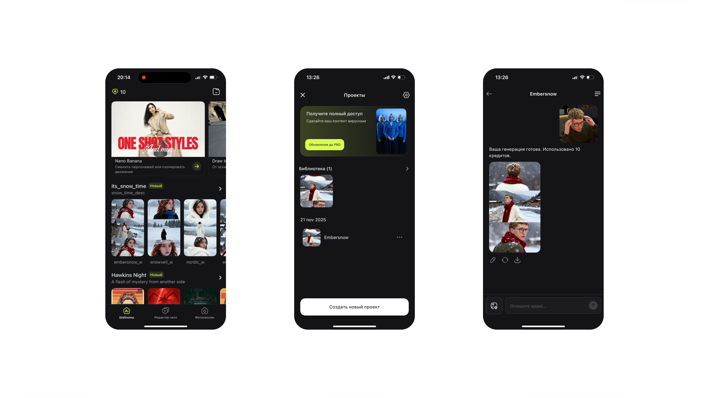
Велком бонус — 10 токенов. Мне этого хватило на генерацию одного изображения. Ничего не понятно и не очень интересно. После генерации пишут сколько списалось токенов, но не понятно сколько осталось — остаток видно только на главном экране. Сам проект нельзя переименовать, и когда их станет много — это станет проблемой. Есть разделение по датам, но это единственный якорь.
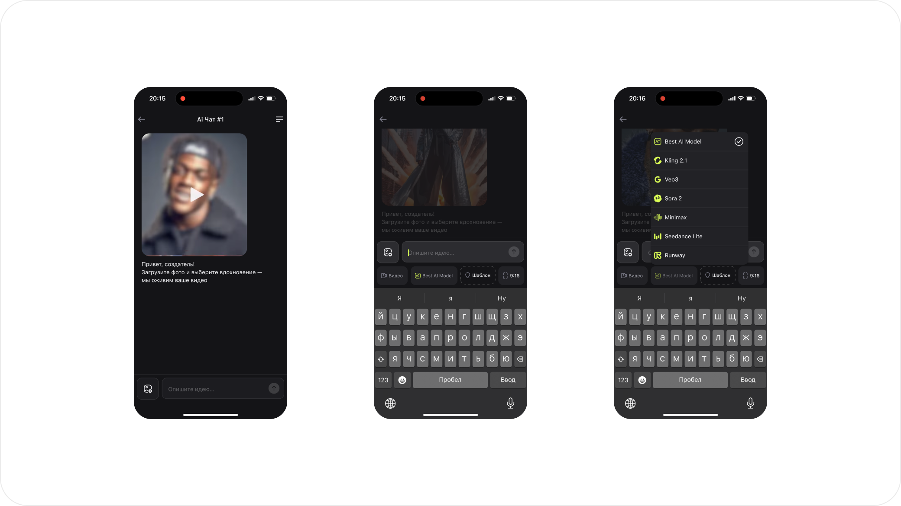
В чате около поля ввода есть строка настроек генерации — неплохая идея. Не нужно никуда переходить и все под рукой.
Выбрал пять друзей, которые используют нейросети в своей жизни или работе. Пообщавшись с ними подтвердил свои проблемы-гипотезы и выделил еще несколько.
В результате бенчмаркинга и интервью получилось собрать пулл проблем. Некоторые из них повторялись или были схожи по смыслу, поэтому я их отфильтровал, и в итог попали следующие гипотезы:
Если бы у меня была команда с менеджером, то мы бы отсортировали список в порядке приоритетов (приоритизацию можно разложить по условной формуле ценность/сложность) и взяли бы в 1 релиз только часть с наибольшими коэффициентами, а остальные оставили бы на будущее — после запуска.
Но так как я сам себе менеджер, то я решил взять в условный прод все пункты, кроме 8, 9 и 10, потому что не могу повлиять на них как дизайнер.
На данном этапе проектирования ограничился базой.
По разным отчетам, около 80-85% владельцев смартфонов используют темную тему, если она доступна. Не буду их разочаровывать.
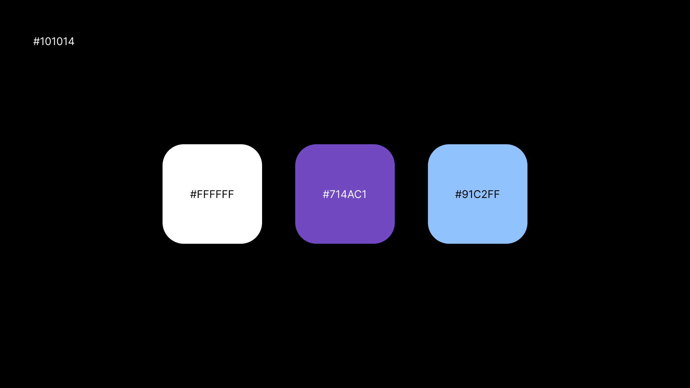
Чем я руководствовался при выборе цвета? Выбрал синий цвет как стартовую точку (синий ассоциируется с технологичностью и надежностью). По цветовому кругу Иттена сделал по одному шагу от синего в сторону циана и мадженты для создания аналогичной цветовой схемы (циан и маджента ассоциируются с футуристичностью и инновациями).
В сочетании с ключевыми белым и черным получилась такая палитра:
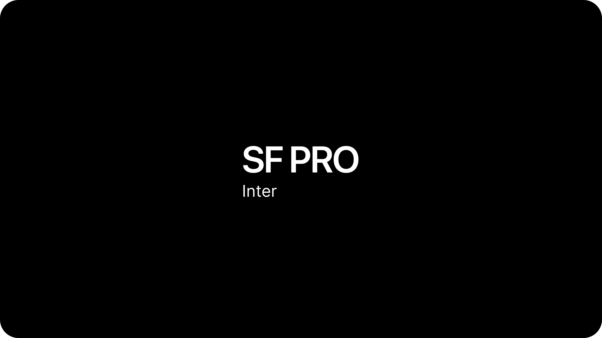
Мне хотелось, чтобы интерфейс выглядел современно, аккуратно и без лишнего шума. Поэтому я сразу смотрел в сторону гротесков — они проще, чище и лучше подходят под минималистичный стиль, чем антиквы.
В итоге выбрал такую пару:
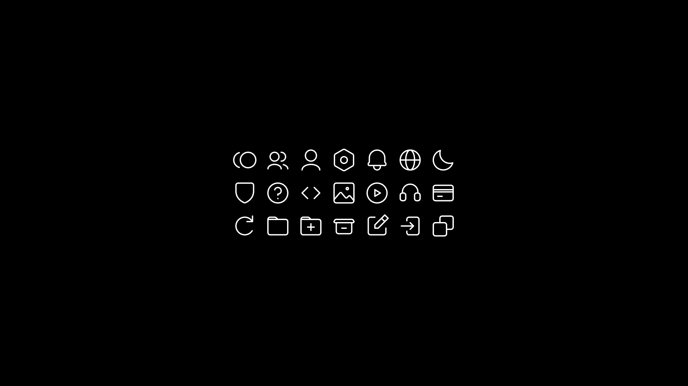
Мне хотелось, чтобы интерфейс выглядел аккуратно и современно, поэтому я взял чистые контурные иконки без лишних деталей. Они легко читаются и хорошо работают в паре с минималистичной типографикой. Засчет этого интерфейс получается чище, а навигация интуитивнее.
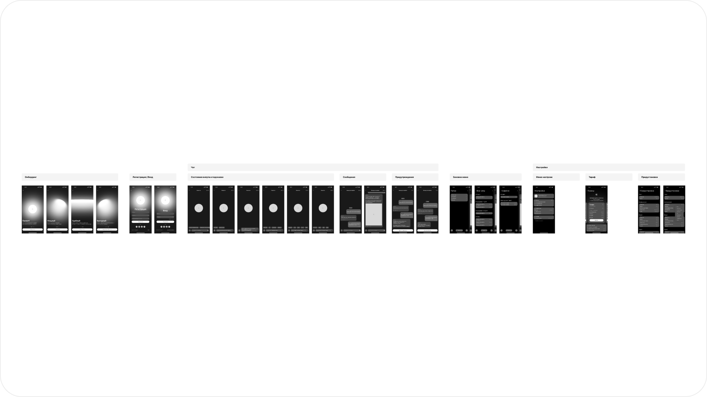
Сначала работал над low-fi дизайном, но не будем на нем задерживаться, просто посмотрите пруф и перейдем к итоговым макетам.
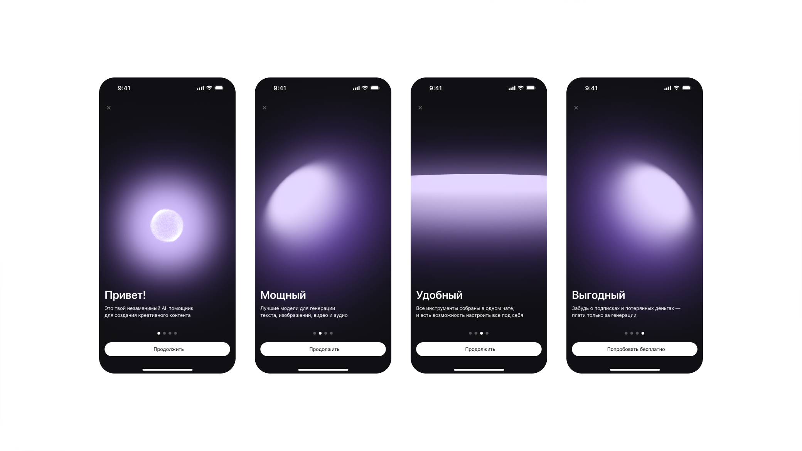
Нового пользователя встречают 4 экрана онбординга, и в конце четкое обозначение, что можно попробовать бесплатно. Ни о какой регистрации пока не говорим, чтобы никого не спугнуть.
Сервис работает по принципу “одного окна”. То есть в одном чате можно пользоваться сразу всеми нейросетями: для генерации текста, изображений, видео и аудио. За генерации всего, кроме текста, со счета списываются токены. Подробнее об этой системе можно будет узнать в разделах “Токены” и “Помощь”.
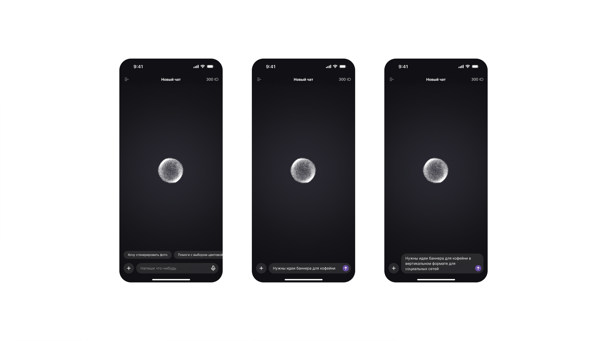
Строка ввода внизу экрана подстраивается под контекст. Если она пустая (с плейсхолдером) — выше нее показываются варианты запросов.
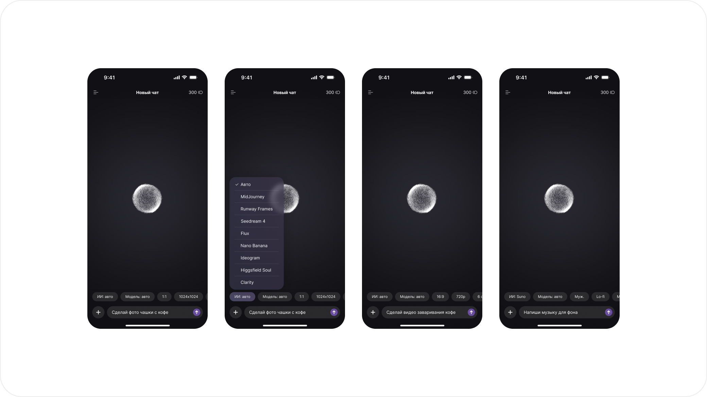
Если в поле ввода появляется запрос на генерацию чего-то кроме текста, то появляется строка с настройками генерации. Можно настраивать все в ручную перед отправкой сообщения или заранее выбрать все настройки в разделе “Предустановки” (об этом будет дальше). Также можно поставить “Авто” режим для каждого пункта, чтобы сервис сам решил, какая нейросеть лучше подойдет в данном случае и какие настройки применить.
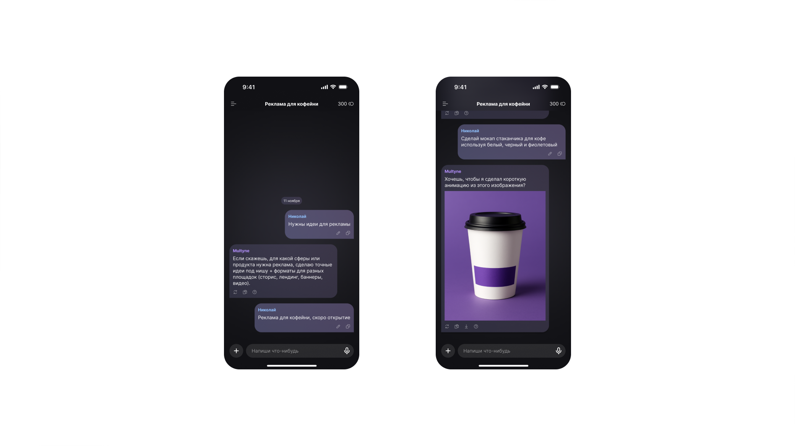
Формат работы в приложении сделал на подобии обычной переписки в месседжере. Это похоже на общение со своим личным помощником. Как минимум — это привычная модель взаимодействия с почти минимальным порогом входа. Как максимум — это должно повысить ретеншн.
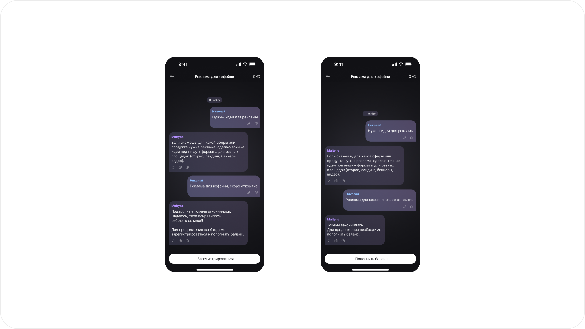
Когда у пользователя заканчиваются токены, то приходит предупреждение, и вместо строки ввода появляется кнопка с целевым действием. Новому пользователю предлагается зарегистрироваться, а старому — пополнить баланс.
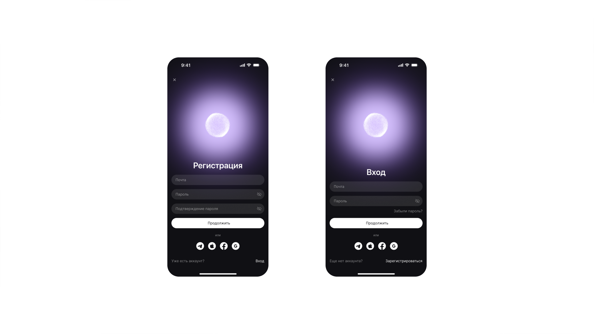
Для регистрации и входа запрашиваем минимально необходимое количество информации и предлагаем несколько вариантов, как это сделать.
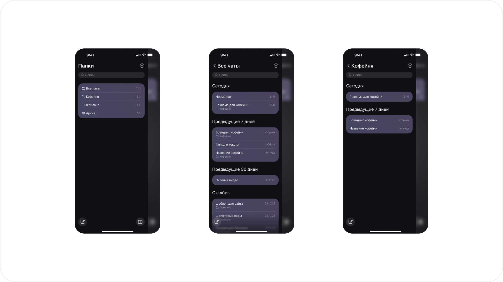
Из чата можно открыть меню с помощью свайпа или через кнопку. Тут происходит навигация по чатам и папкам, а также возможно открыть настройки. В папке со всеми чатами также видно, к какой папке, если она есть, относится чат. Также везде сделал распределение по времени и дате и добавил строку поиска.
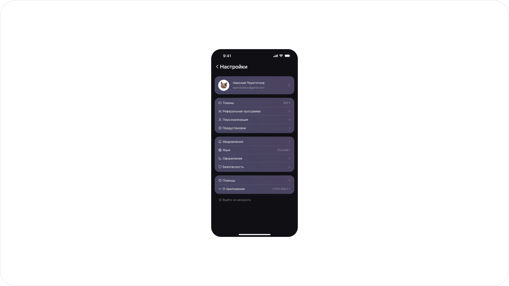
В настройках есть доступ к информации о профиле, токенам, предустановкам и прочим настройкам.
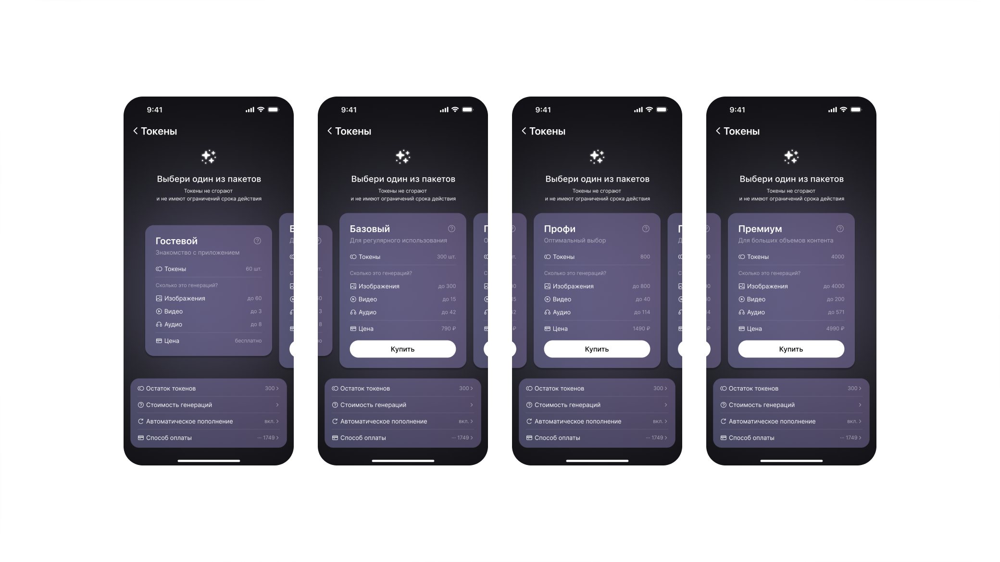
Токены можно получить купив один из трех пакетов. В каждом из них показал основную информацию, если ее не достаточно — есть кнопка помощи. Также тут есть информация о гостевом пакете, который дается всем для знакомства с приложением. В нижней части экрана расположил основные настройки и информацию по токенам.
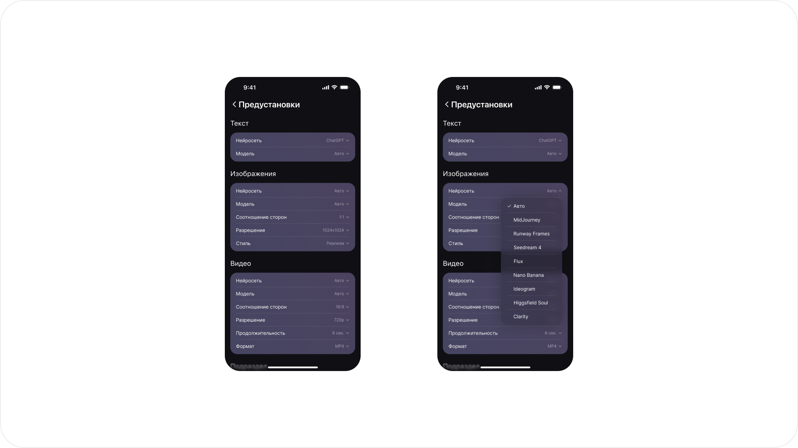
В разделе предустановок можно заранее выбрать все необходимые настройки генерации контента, чтобы не менять их каждый раз в чате.
Потыкать прототип в Figma можно тут. Там два флоу: для нового и для старого пользователя.
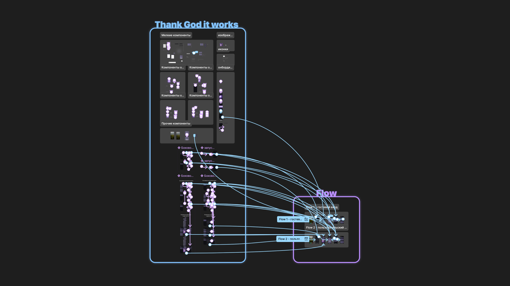
Это был интересный проект, в ходе которого я:
Это концептуальный проект, который не был воплощен в жизнь, поэтому никаких метрик нет. Но можно предположить, что использование Multyne по сравнению с использованием всех нейросетей по отдельности может:
Получается, задизайнено 👌

Дальше я бы проработал оставшиеся разделы приложения и отправился проводить UX-тесты. В ходе исследований составил бы новый список проблем-гипотез и принялся бы их отрабатывать.
Также я бы постепенно добавлял в приложение новые функции:
Кроме того я бы разработал веб-версию сервиса.
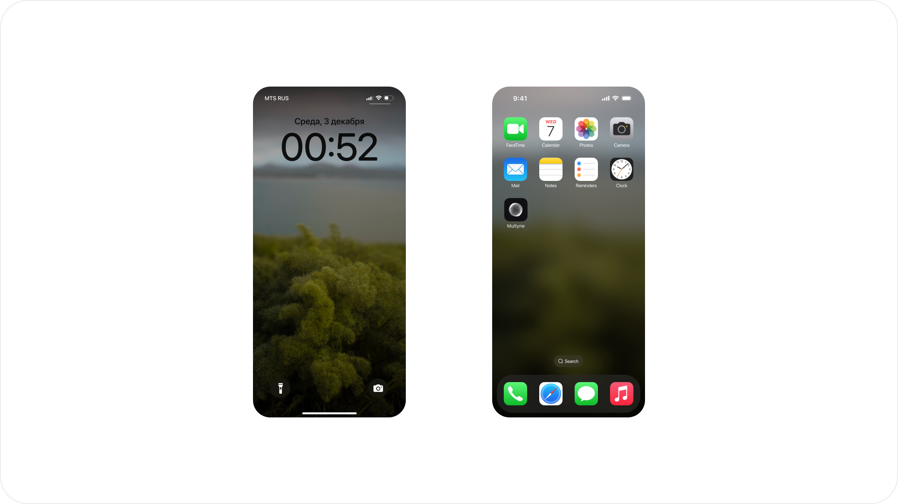
В прототипе в качестве картинки рабочего стола использовал фотографию, сделанную мной в Армении на озере Севан около монастыря Севанаванк.
Выбрал ее не только потому, что она действительно стоит на моем рабочем столе, но и потому, что ее основной цвет (тепло-зеленый) является комплиментарным к фиолетово-синему (фирменному цвету приложения).